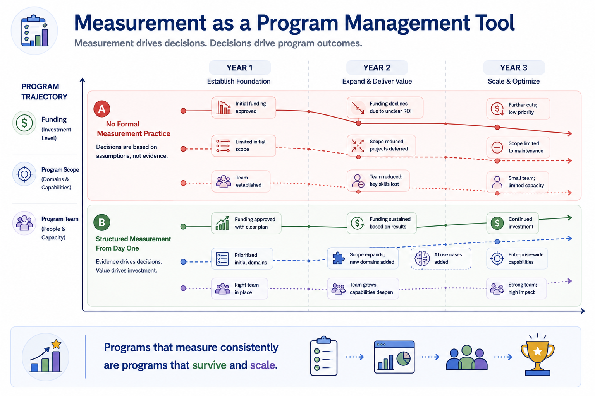
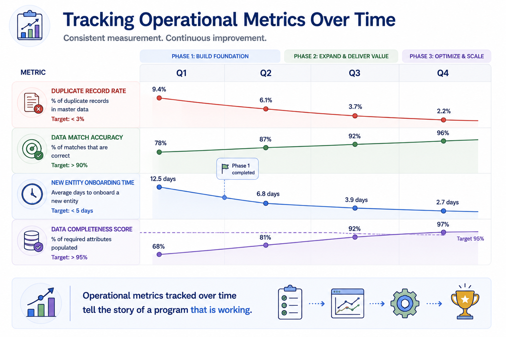
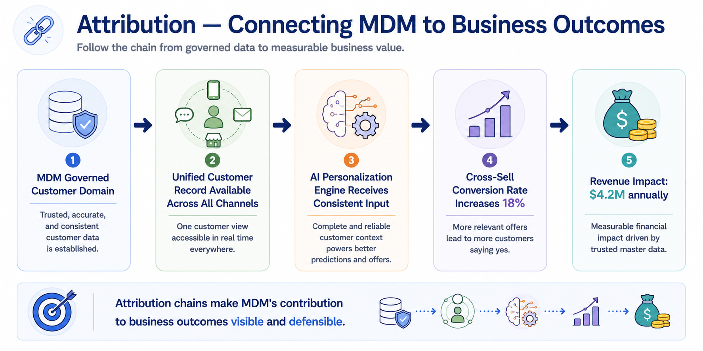
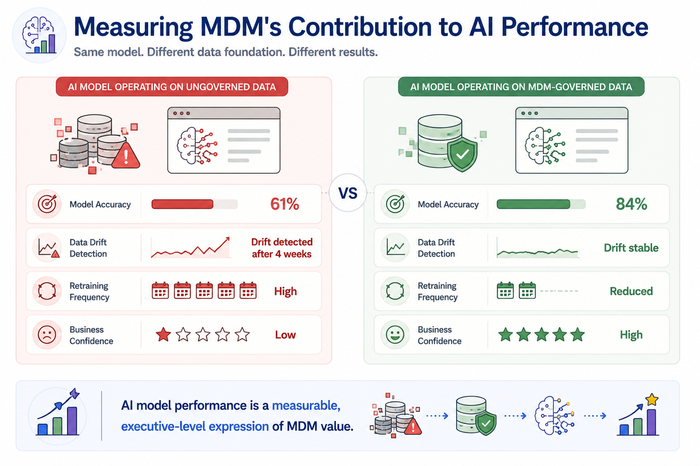
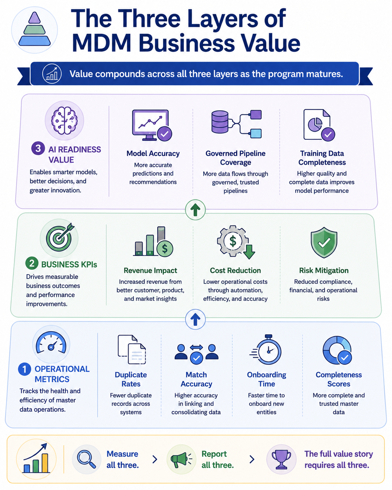

Measuring Business Value
Module support notes
Why Measurement Is a Strategic Discipline
Measurement is not simply a reporting obligation — it is a program management discipline that shapes how MDM initiatives are funded, scoped, and sustained. Organizations that invest in measurement from the beginning build a continuous feedback loop between program activity and business outcomes.
That feedback loop serves multiple purposes: it tells the team where to focus improvement effort, it gives sponsors the evidence they need to defend the program's budget, and it creates a shared language between data teams and business leaders that keeps alignment intact over time.

Operational Metrics in Practice
Operational metrics are the most immediate evidence that MDM is functioning as intended — and the easiest to track continuously, because they are generated by the MDM system itself. Organizations that establish automated operational reporting from the early phases of implementation create a persistent record of progress that requires minimal manual effort to maintain.
The key discipline is consistency: tracking the same metrics in the same way over time, so that trend lines are meaningful and comparable across reporting periods.
- Duplicate record rate — tracked as a declining trend over time
- Data match accuracy — improving toward a defined target threshold
- Onboarding time — typically drops sharply after Phase 1 completion
- Data completeness score — rising toward the agreed minimum standard
Tip
Establish your baseline operational metrics before Phase 1 goes live — not after. Without a pre-implementation baseline, you cannot demonstrate improvement. The before-and-after comparison is what makes the trend line credible to stakeholders who weren't watching the program from the start.

Connecting MDM to Business KPIs
One of the most common challenges in MDM measurement is attribution — demonstrating that a business KPI improvement was caused by MDM rather than by other factors. The most effective approach is to build attribution chains that trace the connection from a specific MDM outcome to a specific business result.
These chains do not need to prove causality with statistical rigor. They need to tell a coherent, credible story that a business leader can follow from the MDM activity to the outcome on their dashboard. When those chains are documented and reviewed regularly with business stakeholders, they build shared understanding of how MDM contributes to performance — and make it much harder for the program to be dismissed as a background infrastructure cost.
Note
An attribution chain example: governing the customer domain → unified customer record available across all channels → AI personalization engine receives consistent input → cross-sell conversion rate increases → measurable revenue impact. Each link in the chain is documentable. The full chain is the business case.

AI Performance as an MDM Value Metric
As organizations scale their AI programs, AI model performance metrics are becoming one of the most powerful ways to express MDM value to senior leadership. A Chief Data Officer who can show that governing the customer domain improved a churn prediction model's accuracy by a significant margin has made a business case that no executive needs a data background to understand.
Tracking AI model performance before and after MDM governance of the relevant domains should be a standard component of every MDM value measurement framework in organizations with active AI initiatives.
Warning
If your organization has active AI initiatives but no MDM measurement framework that tracks AI model performance, you are likely underreporting MDM value — and undervaluing the program in budget conversations. The connection between governed data and model accuracy is one of the clearest, most executive-legible value stories available to MDM programs today.

MDM value exists at three distinct layers — and the full story requires reporting on all three, not just the one closest to the data team's day-to-day work.
